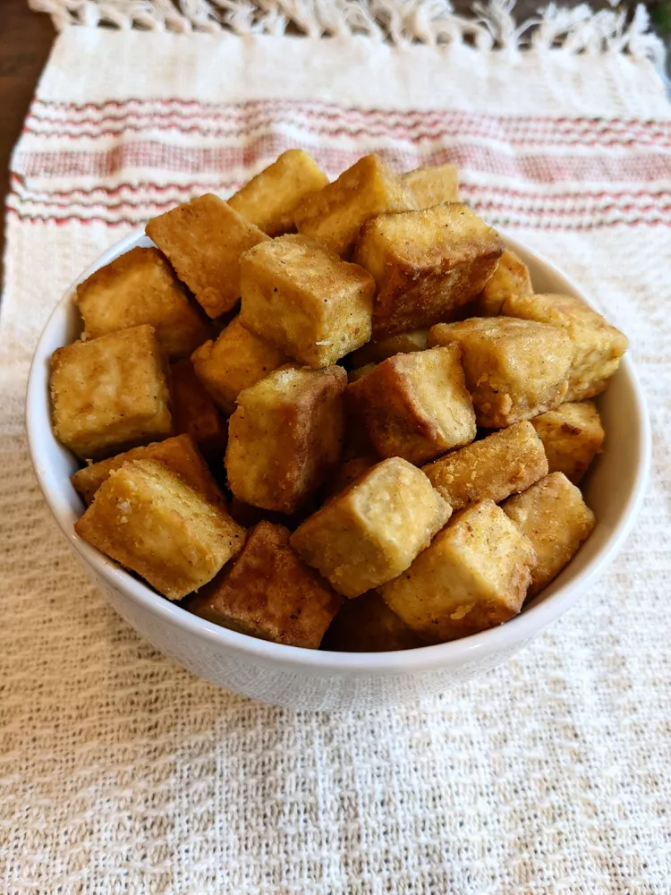

Return to Index
Vegan Fried Tofu

Description
Fried Tofu that can be added to many dishes.
Ingredients
- 1 (12 ounce) package extra-firm tofu
- 3 tablespoons nutritional yeast
- 2 tablespoons all-purpose flour
- 2 teaspoons garlic powder
- ½ teaspone salt
- ½ teaspoon ground black pepper
- 2 tablespoons olive oil
Steps
- Drain and press tofu between paper towels until fairly dry. Slice tofu into strips or 1/2-inch cubes.
- Combine nutritional yeast, flour, garlic powder, salt, and pepper in a resealable plastic bag. Add tofu pieces in batches and gently shake until coated.
- Heat oil in a skillet over medium heat. Add tofu in batches and cook, turning to brown all sides, until golden brown and lightly crispy, 4 to 6 minutes. Drain on a plate lined with a paper towel to absorb excess oil.